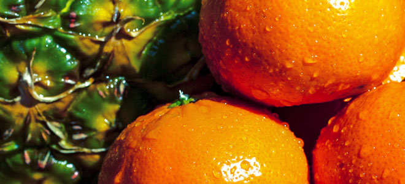

Фирма 'Свежие Апельсины' представляет новую линейку упаковок для своих продуктов: экологичные и удобные для клиентов

"Фирма 'Свежие Апельсины' рада представить своим клиентам новую линейку упаковок для наших продуктов. Мы всегда стремимся к инновациям, и эти новые упаковки не исключение.
Наши экологические упаковки разработаны с учетом наших ценностей по сохранению окружающей среды. Мы использовали упаковочные материалы, которые можно перерабатывать, чтобы сократить наш экологический след. Теперь наши клиенты могут наслаждаться свежестью наших апельсинов, не беспокоясь о вреде для планеты.
Кроме того, новые упаковки обеспечивают удобство для наших клиентов. Мы учитывали обратную связь и потребности наших потребителей, чтобы создать упаковки, которые легко открывать и использовать. Теперь каждый может получить свои любимые апельсины от 'Свежих Апельсинов' быстро и без усилий.
Мы уверены, что эта новая линейка упаковок станет прекрасным дополнением к нашим высококачественным продуктам. Мы благодарим всех наших клиентов за их поддержку и надеемся, что они оценят усовершенствования, которые мы внесли для их удобства и удовольствия."